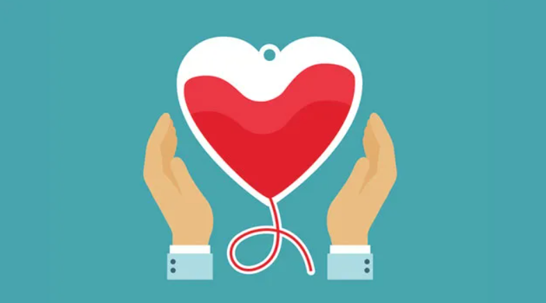

Every two seconds, someone in the United States requires a blood transfusion, according to the American Red Cross. This year, however, the United States is facing its worst blood shortage in more than a decade, the Red Cross(link is external and opens in a new window) says.
“Donating blood saves lives,” says Robert DeSimone, MD, director of transfusion medicine at NewYork-Presbyterian/Weill Cornell Medical Center, who is encouraging people to do their part and make an appointment to donate.
“For as long as medicine has been around, we’ve had to rely on the goodness of other people to give us blood when we need it,” says Sarah Vossoughi, MD, the medical director of apheresis and associate director of transfusion medicine and cellular therapy at NewYork-Presbyterian/Columbia University Irving Medical Center.
“We really need people who want to come and donate. The fact that we can store blood and use it when we need it in parts—whether you need the red cells, the plasma, or the platelets—has been a huge medical advance.”
While blood donors don’t expect to be rewarded for the act of kindness, rolling up your sleeve comes with some surprising health benefits